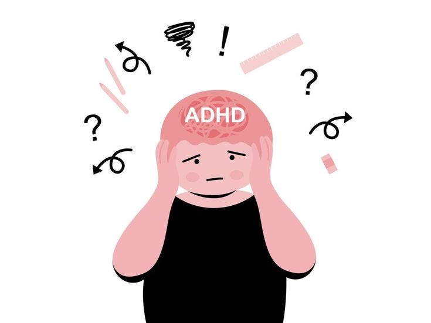

ADHD(in Adults)

What is it?
Attention-Deficit/Hyperactivity Disorder affects focus, impulse control, and executive function—not just in kids, but adults too.
Signs & Symptoms
- Trouble focusing or finishing tasks
- Forgetfullness or poor memory
- Restlessness or feeling "on the go"
- Impulsive decisions or speaking out of turn
- Difficulty organizing stuff
Coping Tips
- Break tasks into smaller steps
- Use timers and reminders
- Keep a planner or digital calender
- Minimize distractions in your workspace
- Exercise regularly to manage restlessness
When to Consult a Professional
- Symptoms impact your job, studies, or relationships
- You've struggled with attention since childhood
- You feel overwhelmed by everyday responsibilities